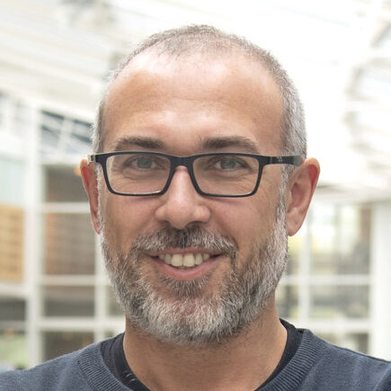

.png)
We read on Tuesdays at 13:30.
Here is the list of all the papers we read so far.
-
Static TypeScript: An Implementation of a Static Compiler for the TypeScript Language
Managed Programming Languages and Runtimes 2019

-
Rotten green tests
ICSE 2019

-
Decoupling Algorithms from Schedule for Easy Optimization of Image Processing Pipelines
Transactions on Graphics 2012

-
Collaborative Verification-Driven Engineering of Hybrid Systems
Mathematics in Computer Science 2014
 -
-
On the use of models for high-performance scientific computing applications: an experience report
SoSym 2018

-
Madeus: A Formal Deployment Model
HPCS 2018

-

-
Why Don't People Use Formal Methods?
Blog 2019
-
Industry 4.0: A survey on technologies, applications and open research issues
Journal of Industrial Information Integration 2017

-

-
Meaningful Modeling: What's the Semantics of "Semantics"?
IEEE Computer 2004
-
-
-

-
Chaos Engineering
IEEE Software 2016
-
Quality of service profiling
ICSE 2010
-
-
-
Empirical Assessment of MDE in Industry
ICSE 2011
-
Hybrid Regression Test Selection
ICSE 2018
-
Propositions as Types
CACM 2015
-
-
-
Generalized Data Structure Synthesis
ICSE 2018
-